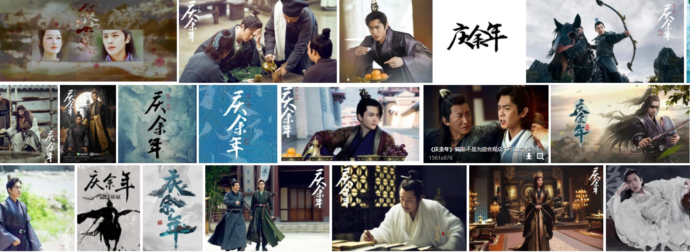
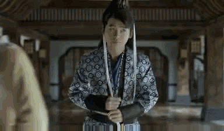

|  | |
| 范闲十五岁的时候，父亲范建及监察院院长陈萍萍派用毒高手费介教他识毒用毒和武功，四年后范闲武力已属上乘。在破解了一场投毒事件后，他带着危机感和对真相的探索前赴京都。在熟悉京都的过程中，范闲见识了柳如玉和弟弟范思辙的下马威，对未来的妻子林婉儿一见钟情，也看到了亭亭玉立的才女妹妹范若若。然而随即平静的生活就被突然打破，范闲在牛栏街上遭遇了一场围杀，滕梓荆为救范闲而死，各方庆贺范闲的逃生，更引得太子和二皇子争相拉拢，却无人在意死去的卑微侍卫滕梓荆，范闲感到心寒，更加理解母亲叶轻眉要改变世界的想法。在充满正义的小伙伴们的帮助下，范闲历经千山万水，不断克服各种困难。在这个过程... |  |
| |
|